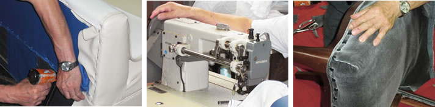

椅子・ソファ張替えの職人集団タックは技術と価格に自信があります
椅子張替えやソファー張替えに長年取り組むタックは数多くの作業実績に基づいた職人集団です。確かな技術で思い入れのある椅子やソファーを美しくよみがえらせます。「お気に入りの革張りの椅子がくたびれてきた」「ソファーの肘掛の部分が擦れてきてしまった」「クリーニングでは落ちそうにない汚れをつけてしまった」そんなご要望やお悩みをお持ちの方はお気軽にお問合せください。
椅子・ソファ張替えの職人集団タックは技術と価格に自信があります
椅子張替えやソファー張替えに長年取り組むタックは数多くの作業実績に基づいた職人集団です。確かな技術で思い入れのある椅子やソファーを美しくよみがえらせます。「お気に入りの革張りの椅子がくたびれてきた」「ソファーの肘掛の部分が擦れてきてしまった」「クリーニングでは落ちそうにない汚れをつけてしまった」そんなご要望やお悩みをお持ちの方はお気軽にお問合せください。
椅子やソファーは長年使用をしていると生地の汚れが目立ってきたり、中のウレタンなどがへたってきてしまいます。クリーニングではどうしてもキレイにならない長い時間が経ってしまった汚れのある家具も、生地を張り替えて美しくよみがえらせる事ができます
椅子・ソファ張替え
元々椅子クリーニング業の当社はお客様の「タックさん張替えはできないの？」というリクエストから椅子、ソファー張替え業務をスタートしました。長年家具に向き合うなかで培ってきたノウハウに基づいて、お客様の思い入れのある家具を張り替えや中身(ウレタン材)の入替によって、ReBorn(再生)させます。
椅子ソファーの張替に取り組む事業者は多くありますが、当社は長年この仕事に取り組む職人の手わざがあらゆる工程で活かされています。お客様からお預りした大切な家具の良さを生かしつつあらたな命をふきこみます。